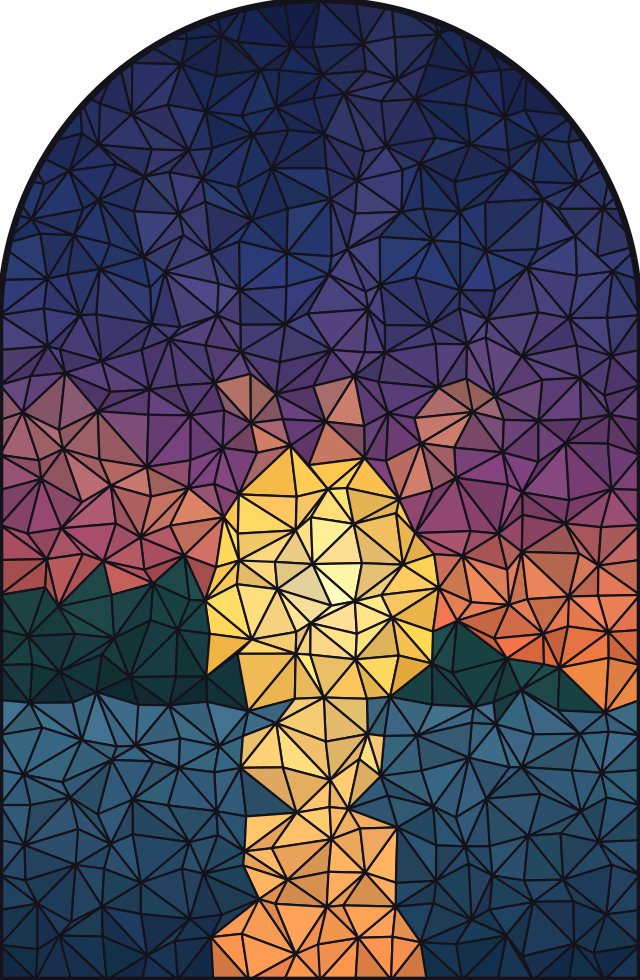
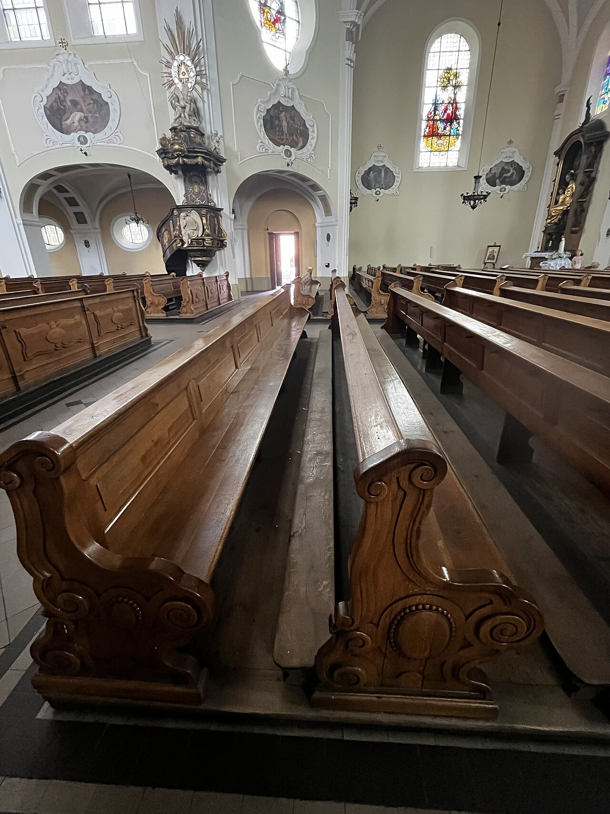
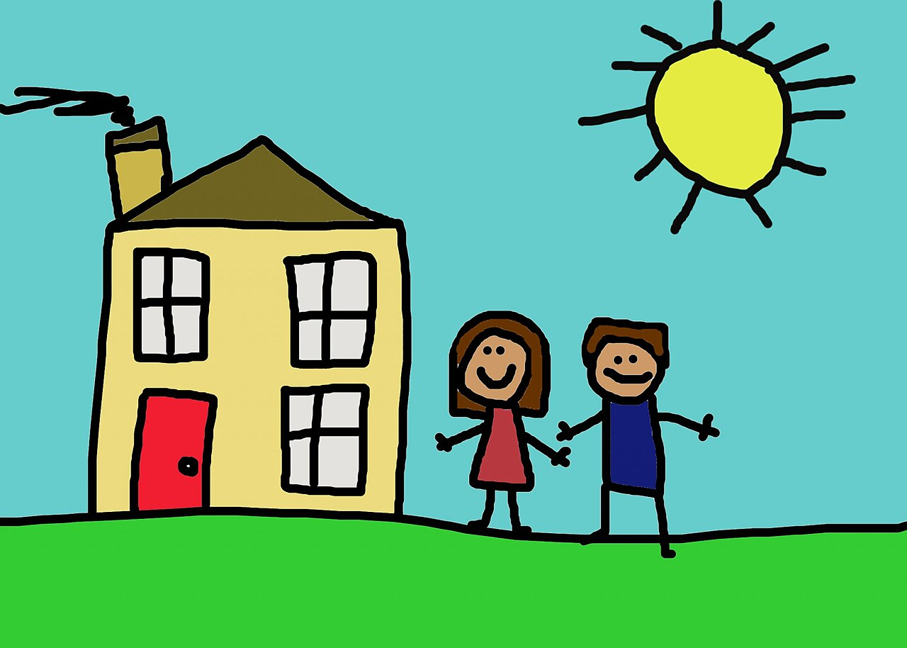
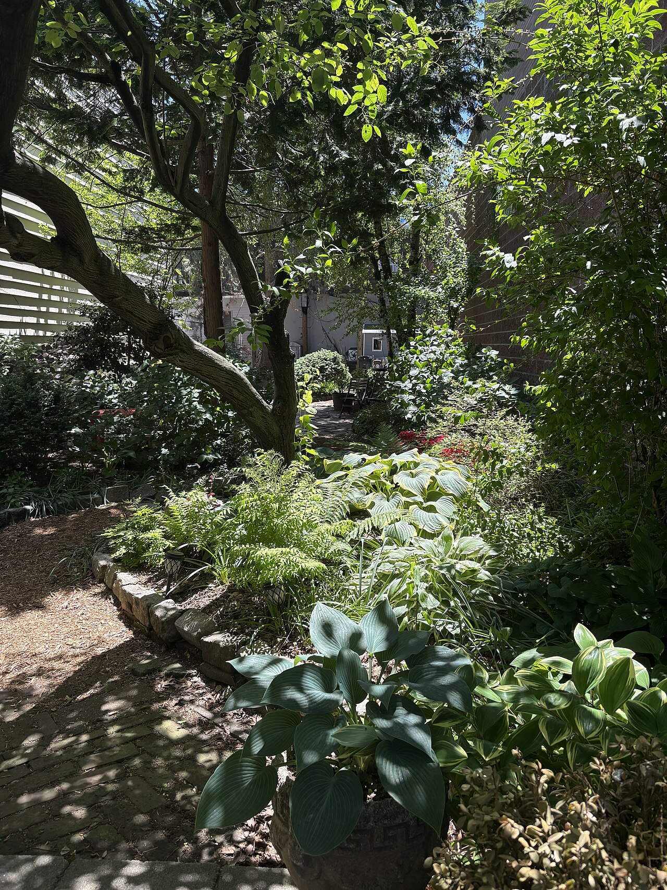
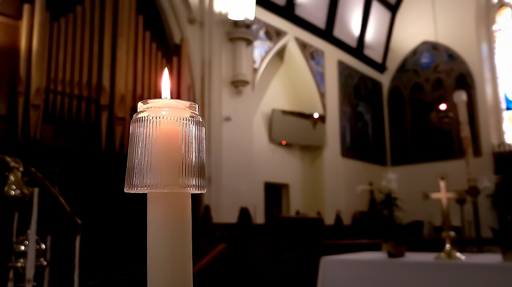
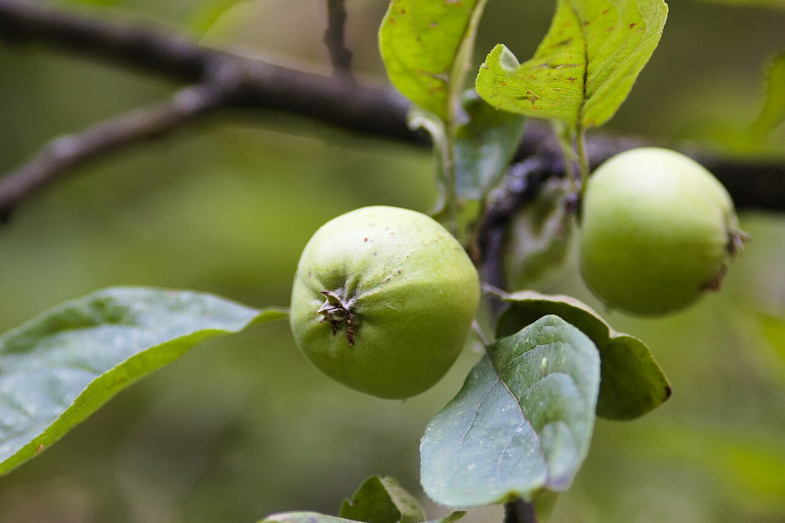

Stillwater Church · Ashford Falls
Sundays at 9:00 and 11:00 am
Come tired.Come curious.Come as you are.
There is a seat for you here, whatever you believe and however your week has gone. We would love to meet you.

“He makes me lie down in green pastures. He leads me beside still waters. He restores my soul.”Psalm 23:2–3, World English Bible

New here?
Your first Sunday, without the guesswork.
- 1
Arrive
Park by the red doors and grab a coffee. A greeter can show you around, or you can simply find a seat.
- 2
Settle the kids
Check them in with a trained leader in about two minutes. Your phone will buzz if they need you.
- 3
Stay for 70 minutes
Songs, a prayer, a talk from the Bible, and bread and wine for anyone who wants it. Wear whatever you like.


Life together
Church happens between Sundays, too.

KidsBirth to grade 5. Safe rooms, trained leaders, and stories that stay with them.
StudentsGrades 6 to 12. A place to bring real questions, and real friends to ask them with.
 Small Groups
Small GroupsEight to twelve people, a living room, and a reason to know each other well.

ServeUse what you are good at, from welcoming at the door to tending the garden.
CareMeals, hospital visits, counseling referrals and someone to sit with you.
Coming up
Save the date
Stories
“I came for the coffee and sat in the back row for a month. Nobody hurried me. Now I help make the coffee.”
“When my husband was ill, meals turned up for eleven weeks. I still don’t know who organized most of them.”
“I’ve got more questions than answers, and that has never once been a problem here.”

How can we pray for you?Send a request any time. A small team reads every one, and it can stay completely private.Ask for prayer
Generosity changes things.One in every five dollars goes straight back to our neighbors. See where it all goes, and give if you would like to.Giving at Stillwater